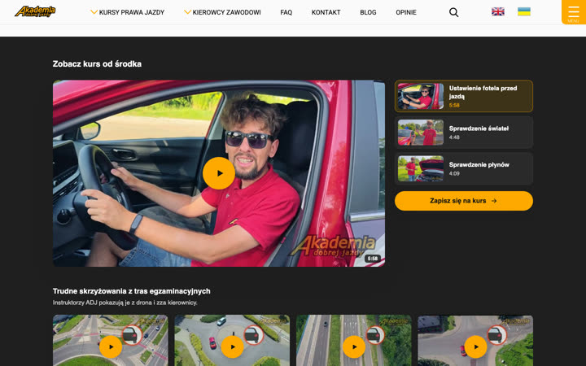
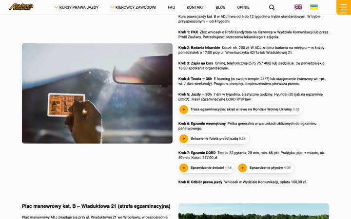
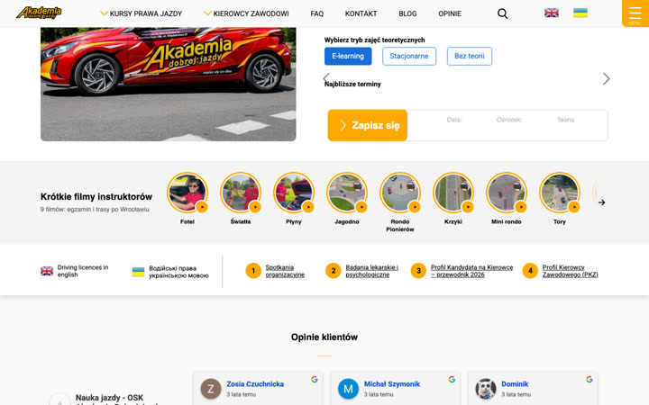
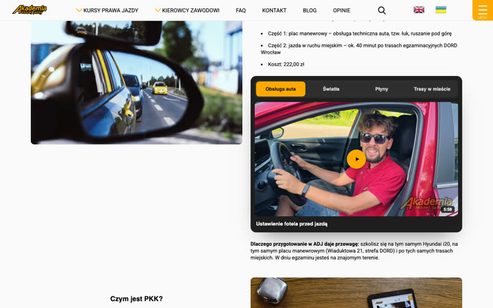
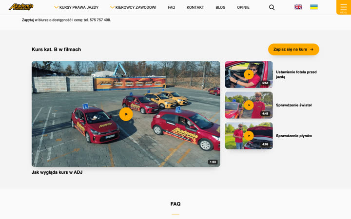
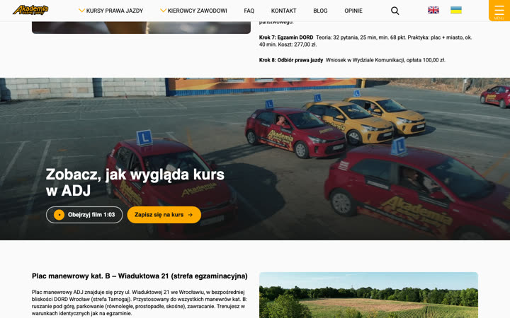
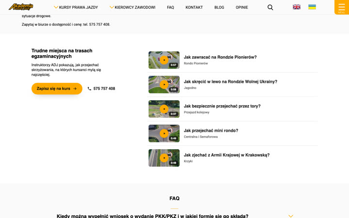

Filmy na stronie kursu kat. B
Każdy wariant to podgląd obecnej strony kursu kat. B z innym sposobem pokazania filmów z kanału ADJ. Podgląd otwiera się od razu w miejscu z filmem. Na dole strony są strzałki do kolejnych wariantów.
1Film w zdjęciu na górze strony
Film o kursie w miejscu zdjęcia na górze strony. Gra od razu na stronie, obok przycisku „Zapisz się”.
2Przycisk na zdjęciu, film w oknie
Zdjęcie zostaje bez zmian, na nim przycisk „Obejrzyj film o kursie”. Film otwiera się w oknie.

3Sekcja kinowa po krokach kursu
Osobna sekcja po krokach kursu: duży odtwarzacz, lista filmów o egzaminie i filmy ze skrzyżowań.

4Filmy przy krokach kursu
Przy krokach kursu (jazdy, egzamin wewnętrzny, egzamin DORD) małe przyciski z filmem do danego kroku.

5Pas z krótkimi filmami pod zdjęciem
Pas z okrągłymi miniaturami filmów pod górą strony, jak historyjki na Instagramie.

6Zakładki przy opisie egzaminu
Zakładki z filmami przy opisie egzaminu praktycznego: obsługa auta, światła, płyny, trasy w mieście.

7Siatka filmów przed FAQ
Siatka filmów przed pytaniami (FAQ): duży film o kursie i trzy filmy o egzaminie.

8Pas z filmem w połowie strony
Szeroki pas z kadrem z filmu i dwoma przyciskami: „Obejrzyj film” i „Zapisz się na kurs”.

9Pytania z jazd w 60 sekund
Lista trudnych skrzyżowań z tras egzaminacyjnych we Wrocławiu, każde z krótkim filmem.